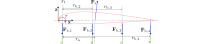

Introduction
The SystemStructure provides a flexible framework for defining the physical structure of airborne wind energy (AWE) systems using discrete mass-spring-damper models. This structure can represent many different AWE system configurations, from simple single-line kites to complex multi-wing systems with intricate bridle networks.
The SystemStructure serves as input to the SymbolicAWEModel, which is based on ModelingToolkit and automatically generates symbolic differential algebraic equations from the structural definition.
Workflow
- Define system components (
Point,Segment,Group, etc.) - Assemble into a
SystemStructure - Pass to
SymbolicAWEModelfor automatic MTK model generation - Simulate the resulting symbolic model
Public enumerations
SymbolicAWEModels.SegmentType — TypeSegmentType `POWER_LINE` `STEERING_LINE` `BRIDLE`Enumeration for the type of a tether segment.
Elements
POWER_LINE: A segment belonging to a main power line.STEERING_LINE: A segment belonging to a steering line.BRIDLE: A segment belonging to the bridle system.
SymbolicAWEModels.DynamicsType — TypeDynamicsType `DYNAMIC` `QUASI_STATIC` `WING` `STATIC`Enumeration for the dynamic model governing a point's motion.
Elements
DYNAMIC: The point is a dynamic point mass, moving according to Newton's second law.QUASI_STATIC: The point's acceleration is constrained to zero, representing a force equilibrium.WING: The point is rigidly attached to a wing body and moves with it.STATIC: The point's position is fixed in the world frame.
Core Model Type
This is the main struct that defines any complete simulation model.
SymbolicAWEModels.SymbolicAWEModel — Typemutable struct SymbolicAWEModel <: AbstractKiteModelThe main state container for a kite power system model, built using ModelingToolkit.jl.
This struct holds the complete state of the simulation, including the physical structure (SystemStructure), the compiled model (SerializedModel), the atmospheric model, and the ODE integrator.
Users typically interact with this model through high-level functions like init! and next_step! rather than accessing its fields directly.
Type Parameters
S: Scalar type, typicallySimFloat.V: Vector type, typicallyKVec3.P: Number of tether points in the system.
set::Settings: Reference to the settings structsys_struct::SystemStructure: Reference to the point mass system with points, segments, pulleys and tethersserialized_model::SymbolicAWEModels.SerializedModel: Container for the compiled and serialized model componentsam::AtmosphericModels.AtmosphericModel: Reference to the atmospheric model as implemented in the package AtmosphericModels Default: AtmosphericModel(set)integrator::Union{Nothing, OrdinaryDiffEqCore.ODEIntegrator}: The ODE integrator for the full nonlinear model Default: nothingt_0::Float64: Relative start time of the current time interval Default: 0.0iter::Int64: Number of next_step! calls Default: 0t_vsm::Float64: Time spent in the VSM linearization step Default: zero(SimFloat)t_step::Float64: Time spent in the ODE integration step Default: zero(SimFloat)set_tether_len::Vector{Float64}: Vector of tether length set-points Default: zeros(SimFloat, 3)
SymbolicAWEModels.SymbolicAWEModel — MethodSymbolicAWEModel(set::Settings, sys_struct::SystemStructure; kwargs...)Constructs a SymbolicAWEModel from an existing SystemStructure.
This is the primary inner constructor. It takes a SystemStructure that defines the physical layout of the kite system and prepares it for symbolic model generation.
Arguments
set::Settings: Configuration parameters.sys_struct::SystemStructure: The physical system definition.kwargs...: Further keyword arguments passed to theSymbolicAWEModelconstructor.
Returns
SymbolicAWEModel: A model ready for symbolic equation generation viainit!.
SymbolicAWEModels.SymbolicAWEModel — MethodSymbolicAWEModel(set::Settings; kwargs...)Constructs a default SymbolicAWEModel with automatically generated components.
This convenience constructor automatically creates a complete AWE model:
- It first builds a
SystemStructurebased on the wing geometry and settings. - Then, it assembles everything into a ready-to-use symbolic model.
Arguments
set::Settings: Configuration parameters.kwargs...: Further keyword arguments passed to theSystemStructureconstructor.
Returns
SymbolicAWEModel: A model ready for symbolic equation generation viainit!.
SymbolicAWEModels.SymbolicAWEModel — MethodSymbolicAWEModel(set::Settings, name::String; kwargs...)Constructs a SymbolicAWEModel for a specific named physical model.
This convenience constructor sets the physical_model field of the Settings struct and then proceeds to create the model.
System structure and components
SymbolicAWEModels.SystemStructure — Typestruct SystemStructureA discrete mass-spring-damper representation of a kite system.
This struct holds all components of the physical model, including points, segments, winches, and wings, forming a complete description of the kite system's structure.
Components
Point: Point masses.Group: Collections of points for wing deformation.Segment: Spring-damper elements.Pulley: Elements that redistribute line lengths.Tether: Groups of segments controlled by a winch.Winch: Ground-based winches.Wing: Rigid wing bodies.Transform: Spatial transformations for initial positioning.
SymbolicAWEModels.SystemStructure — MethodSystemStructure(name, set; points, groups, segments, pulleys, tethers, winches, wings, transforms)Constructs a SystemStructure object representing a complete kite system.
Physical Models
- "ram": A model with 4 deformable wing groups and a complex pulley bridle system.
- "simple_ram": A model with 4 deformable wing groups and direct bridle connections.
Arguments
name::String: Model identifier ("ram", "simple_ram", or a custom name).set::Settings: Configuration parameters fromKiteUtils.jl.
Keyword Arguments
points,groups,segments, etc.: Vectors of the system components.
Returns
SystemStructure: A complete system ready for building aSymbolicAWEModel.
SymbolicAWEModels.Point — Typemutable struct PointA point mass, representing a node in the mass-spring system.
idx::Int16transform_idx::Int16wing_idx::Int16pos_cad::StaticArraysCore.MVector{3, Float64}pos_b::StaticArraysCore.MVector{3, Float64}pos_w::StaticArraysCore.MVector{3, Float64}vel_w::StaticArraysCore.MVector{3, Float64}disturb::StaticArraysCore.MVector{3, Float64}force::StaticArraysCore.MVector{3, Float64}type::DynamicsTypemass::Float64bridle_damping::Float64fix_sphere::Bool
SymbolicAWEModels.Point — MethodPoint(idx, pos_cad, type; wing_idx=1, vel_w=zeros(KVec3), transform_idx=1, mass=0.0)Constructs a Point object, which can be of four different DynamicsTypes:
STATIC: The point does not move. $\ddot{\mathbf{r}} = \mathbf{0}$DYNAMIC: The point moves according to Newton's second law. $\ddot{\mathbf{r}} = \mathbf{F}/m$QUASI_STATIC: The acceleration is constrained to be zero by solving a nonlinear problem. $\mathbf{F}/m = \mathbf{0}$WING: The point has a static position in the rigid body wing frame. $\mathbf{r}_w = \mathbf{r}_{wing} + \mathbf{R}_{b\rightarrow w} \mathbf{r}_b$
where:
- $\mathbf{r}$ is the point position vector
- $\mathbf{F}$ is the net force acting on the point
- $m$ is the point mass
- $\mathbf{r}_w$ is the position in world frame
- $\mathbf{r}_{wing}$ is the wing center position
- $\mathbf{R}_{b\rightarrow w}$ is the rotation matrix from body to world frame
- $\mathbf{r}_b$ is the position in body frame
Arguments
idx::Int16: Unique identifier for the point.pos_cad::KVec3: Position of the point in the CAD frame.type::DynamicsType: Dynamics type of the point (STATIC,DYNAMIC, etc.).
Keyword Arguments
wing_idx::Int16=1: Index of the wing this point is attached to.vel_w::KVec3=zeros(KVec3): Initial velocity of the point in world frame.transform_idx::Int16=1: Index of the transform used for initial positioning.mass::Float64=0.0: Mass of the point [kg].bridle_damping::Float64=0.0: Damping coefficient for bridle points.fix_sphere::Bool=false: If true, constrains the point to a sphere.
Returns
Point: A newPointobject.
SymbolicAWEModels.Group — Typemutable struct GroupA set of bridle lines that share the same twist angle and trailing edge angle.
idx::Int16point_idxs::Vector{Int16}le_pos::StaticArraysCore.MVector{3, Float64}chord::StaticArraysCore.MVector{3, Float64}y_airf::StaticArraysCore.MVector{3, Float64}type::DynamicsTypemoment_frac::Float64twist::Float64twist_ω::Float64tether_force::Float64tether_moment::Float64aero_moment::Float64
SymbolicAWEModels.Group — MethodGroup(idx, point_idxs, vsm_wing::RamAirWing, gamma, type, moment_frac)Constructs a Group object representing a collection of points on a kite body that share a common twist deformation.
A Group models the local deformation of a kite wing section through twist dynamics. All points within a group undergo the same twist rotation about the chord vector.
The governing equation is:
\[\begin{aligned} \tau = \underbrace{\sum_{i=1}^{4} r_{b,i} \times (\mathbf{F}_{b,i} \cdot \hat{\mathbf{z}})}_{\text{bridles}} + \underbrace{r_a \times (\mathbf{F}_a \cdot \hat{\mathbf{z}})}_{\text{aero}} \end{aligned}\]

where:
- $\tau$ is the total torque about the twist axis
- $r_{b,i}$ is the position vector of bridle point $i$ relative to the twist center
- $\mathbf{F}_{b,i}$ is the force at bridle point $i$
- $\hat{\mathbf{z}}$ is the unit vector along the twist axis (chord direction)
- $r_a$ is the position vector of the aerodynamic center relative to the twist center
- $\mathbf{F}_a$ is the aerodynamic force at the group's aerodynamic center
The group can have two DynamicsTypes:
DYNAMIC: the group rotates according to Newton's second law: $I\ddot{\theta} = \tau$QUASI_STATIC: the rotational acceleration is zero: $\tau = 0$
Arguments
idx::Int16: Unique identifier for the group.point_idxs::Vector{Int16}: Indices of points that move together with this group's twist.vsm_wing::RamAirWing: Wing geometry object used to extract local chord and spanwise vectors.gamma: Spanwise parameter (typically -1 to 1) defining the group's location along the wing.type::DynamicsType: Dynamics type (DYNAMICfor time-varying twist,QUASI_STATICfor equilibrium).moment_frac::SimFloat: Chordwise position (0=leading edge, 1=trailing edge) about which the group rotates.
Returns
Group: A newGroupobject with twist dynamics capability.
SymbolicAWEModels.Group — MethodGroup(idx, point_idxs, le_pos, chord, y_airf, type, moment_frac)Inner constructor for a Group object. See Group for details.
SymbolicAWEModels.Segment — Typemutable struct SegmentA segment representing a spring-damper connection from one point to another.
idx::Int16point_idxs::Tuple{Int16, Int16}axial_stiffness::Float64axial_damping::Float64l0::Float64compression_frac::Float64diameter::Float64len::Float64force::Float64
SymbolicAWEModels.Segment — MethodSegment(idx, set, point_idxs, type; l0, compression_frac, axial_stiffness, axial_damping)Constructs a Segment object representing an elastic spring-damper connection between two points.
The segment follows Hooke's law with damping and aerodynamic drag:
Spring-Damper Force:
\[\mathbf{F}_{spring} = \left[k(l - l_0) - c\dot{l}\right]\hat{\mathbf{u}}\]
Aerodynamic Drag:
\[\mathbf{F}_{drag} = \frac{1}{2}\rho C_d A |\mathbf{v}_a| \mathbf{v}_{a,\perp}\]
Total Force:
\[\mathbf{F}_{total} = \mathbf{F}_{spring} + \mathbf{F}_{drag}\]
where:
- $k = \frac{E \pi d^2/4}{l}$ is the axial stiffness
- $l$ is current length, $l_0$ is unstretched length
- $c = \frac{\xi}{c_{spring}} k$ is damping coefficient
- $\hat{\mathbf{u}} = \frac{\mathbf{r}_2 - \mathbf{r}_1}{l}$ is unit vector along segment
- $\dot{l} = (\mathbf{v}_1 - \mathbf{v}_2) \cdot \hat{\mathbf{u}}$ is extension rate
- $\mathbf{v}_{a,\perp}$ is apparent wind velocity perpendicular to segment
Arguments
idx::Int16: Unique identifier for the segment.set::Settings: The settings object containing material properties.point_idxs::Tuple{Int16, Int16}: Tuple containing the indices of the two points.type::SegmentType: Type of the segment (POWER_LINE,STEERING_LINE,BRIDLE).
Keyword Arguments
l0::SimFloat=zero(SimFloat): Unstretched length [m]. Calculated from point positions if zero.compression_frac::SimFloat=0.0: Stiffness reduction factor in compression.axial_stiffness::Float64=NaN: Axial stiffness [N]. IfNaN, it's calculated from settings.axial_damping::Float64=NaN: Axial damping [Ns]. IfNaN, it's calculated from settings.
Returns
Segment: A newSegmentobject.
SymbolicAWEModels.Segment — MethodSegment(idx, point_idxs, axial_stiffness, axial_damping, diameter; l0, compression_frac)Inner constructor for a Segment object. See Segment for details.
SymbolicAWEModels.Pulley — Typemutable struct PulleyA pulley described by two segments with the common point of the segments being the pulley.
idx::Int16segment_idxs::Tuple{Int16, Int16}type::DynamicsTypesum_len::Float64len::Float64vel::Float64
SymbolicAWEModels.Pulley — MethodPulley(idx, segment_idxs, type)Constructs a Pulley object that enforces length redistribution between two segments.
The pulley constraint maintains constant total length while allowing force transmission:
Constraint Equations:
\[l_1 + l_2 = l_{total} = \text{constant}\]
Force Balance:
\[F_{pulley} = F_1 - F_2\]
Dynamics:
\[m\ddot{l}_1 = F_{pulley} = F_1 - F_2\]
where:
- $l_1, l_2$ are the lengths of connected segments
- $F_1, F_2$ are the spring forces in the segments
- $m = \rho_{tether} \pi (d/2)^2 l_{total}$ is the total mass of both segments
- $\dot{l}_1 + \dot{l}_2 = 0$ (velocity constraint)
The pulley can have two DynamicsTypes:
DYNAMIC: the length redistribution follows Newton's second law: $m\ddot{l}_1 = F_1 - F_2$QUASI_STATIC: the forces are balanced instantaneously: $F_1 = F_2$
Arguments
idx::Int16: Unique identifier for the pulley.segment_idxs::Tuple{Int16, Int16}: Tuple containing the indices of the two segments.type::DynamicsType: Dynamics type of the pulley (DYNAMICorQUASI_STATIC).
Returns
Pulley: A newPulleyobject.
SymbolicAWEModels.Tether — Typemutable struct TetherA collection of segments that are controlled together by a winch.
idx::Int16segment_idxs::Vector{Int16}winch_idx::Int16stretched_len::Float64
SymbolicAWEModels.Tether — MethodTether(idx, segment_idxs, winch_idx)Constructs a Tether object representing a flexible line composed of multiple segments.
A tether enforces a shared unstretched length constraint across all its constituent segments:
Length Constraint:
\[\sum_{i \in \text{segments}} l_{0,i} = L\]
Winch Control: The unstretched tether length L is controlled by a winch.
Arguments
idx::Int16: Unique identifier for the tether.segment_idxs::Vector{Int16}: Indices of segments that form this tether.winch_idx::Int16: Index of the winch controlling this tether.
Returns
Tether: A newTetherobject.
SymbolicAWEModels.Winch — Typemutable struct WinchA set of tethers (or a single tether) connected to a winch mechanism.
idx::Int16model::WinchModels.AbstractWinchModeltether_idxs::Vector{Int16}tether_len::Union{Nothing, Float64}tether_vel::Float64set_value::Float64brake::Boolforce::StaticArraysCore.MVector{3, Float64}
SymbolicAWEModels.Winch — MethodWinch(idx, model, tether_idxs; tether_len=0.0, tether_vel=0.0, brake=false)Constructs a Winch object that controls tether length through torque or speed regulation.
The winch acceleration function α depends on the winch model type:
- Torque-controlled: Direct torque input with motor dynamics.
- Speed-controlled: Velocity regulation with internal control loops.
For detailed mathematical models of winch dynamics, motor characteristics, and control algorithms, see the WinchModels.jl documentation.
Arguments
idx::Int16: Unique identifier for the winch.model::AbstractWinchModel: The winch model (TorqueControlledMachine, etc.).tether_idxs::Vector{Int16}: Vector of indices of the tethers connected to this winch.
Keyword Arguments
tether_len::SimFloat=0.0: Initial tether length [m].tether_vel::SimFloat=0.0: Initial tether velocity (reel-out rate) [m/s].brake::Bool=false: If true, the winch brake is engaged.
Returns
Winch: A newWinchobject.
SymbolicAWEModels.Wing — Typemutable struct WingA rigid wing body that can have multiple groups of points attached to it.
The wing provides a rigid body reference frame for attached points and groups. Points with type == WING move rigidly with the wing body according to the wing's orientation matrix R_b_w and position pos_w.
Special Properties
The wing's orientation can be accessed as a rotation matrix or a quaternion:
R_matrix = wing.R_b_w
wing.R_b_w = R_matrix
quat = wing.Q_b_w
wing.Q_b_w = quatidx::Int16vsm_aero::BodyAerodynamicsvsm_wing::RamAirWingvsm_solver::Solvergroup_idxs::Vector{Int16}transform_idx::Int16R_b_c::Matrix{Float64}pos_cad::StaticArraysCore.MVector{3, Float64}Q_b_w::Vector{Float64}ω_b::StaticArraysCore.MVector{3, Float64}pos_w::StaticArraysCore.MVector{3, Float64}vel_w::StaticArraysCore.MVector{3, Float64}acc_w::StaticArraysCore.MVector{3, Float64}vsm_y::Vector{Float64}vsm_x::Vector{Float64}vsm_jac::Matrix{Float64}wind_disturb::StaticArraysCore.MVector{3, Float64}va_b::StaticArraysCore.MVector{3, Float64}v_wind::StaticArraysCore.MVector{3, Float64}aero_force_b::StaticArraysCore.MVector{3, Float64}aero_moment_b::StaticArraysCore.MVector{3, Float64}elevation::Float64elevation_vel::Float64elevation_acc::Float64azimuth::Float64azimuth_vel::Float64azimuth_acc::Float64heading::Float64turn_rate::StaticArraysCore.MVector{3, Float64}turn_acc::StaticArraysCore.MVector{3, Float64}course::Float64aoa::Float64fix_sphere::Bool
SymbolicAWEModels.Wing — MethodWing(idx, vsm_aero, vsm_wing, vsm_solver, group_idxs, R_b_c, pos_cad; transform_idx)Constructs a Wing object representing a rigid body that serves as a reference frame.
A Wing provides a rigid body coordinate system for kite components. Points with type == WING move rigidly with the wing body. Groups attached to the wing undergo local deformation (twist) relative to the rigid wing body frame.
Rigid Body Dynamics: The wing follows standard rigid body equations of motion:
\[\begin{aligned} \frac{\delta \mathbf{q}_b^w}{\delta t} &= \frac{1}{2} \Omega(\boldsymbol{\omega}_b) \mathbf{q}_b^w \\ \boldsymbol{\tau}_w &= \mathbf{I} \frac{\delta \boldsymbol{\omega}}{\delta t} + \boldsymbol{\omega}_b \times (\mathbf{I}\boldsymbol{\omega}_b) \end{aligned}\]
where $\mathbf{q}_b^w$ is the quaternion, $\boldsymbol{\omega}_b$ is the angular velocity, $\mathbf{I}$ is the inertia tensor, and $\boldsymbol{\tau}_w$ is the total applied torque.
Coordinate Transformations: Points attached to the wing transform as: $\mathbf{r}_w = \mathbf{r}_{wing} + \mathbf{R}_{b \rightarrow w} \mathbf{r}_b$
Arguments
idx::Int16: Unique identifier for the wing.vsm_aero,vsm_wing,vsm_solver: Vortex Step Method components.group_idxs::Vector{Int16}: Indices of groups attached to this wing.R_b_c::Matrix{SimFloat}: Rotation matrix from body frame to CAD frame.pos_cad::KVec3: Position of wing center of mass in CAD frame.
Keyword Arguments
transform_idx::Int16=1: Transform used for initial positioning and orientation.
Returns
Wing: A newWingobject providing a rigid body reference frame.
SymbolicAWEModels.Transform — Typemutable struct TransformDescribes the spatial transformation (position and orientation) of system components relative to a base reference point.
idx::Int16wing_idx::Union{Nothing, Int16}rot_point_idx::Union{Nothing, Int16}base_point_idx::Union{Nothing, Int16}base_transform_idx::Union{Nothing, Int16}elevation::Float64azimuth::Float64heading::Float64base_pos::Union{Nothing, StaticArraysCore.MVector{3, Float64}}
SymbolicAWEModels.Transform — MethodTransform(idx, elevation, azimuth, heading; base_point_idx, base_pos, base_transform_idx, wing_idx, rot_point_idx)Constructs a Transform object that orients system components using spherical coordinates.
All points and wings with a matching transform_idx are transformed together as a rigid body:
- Translation: Translate such that
base_point_idxis at the specifiedbase_pos. - Rotation 1: Rotate so the target (
wing_idxorrot_point_idx) is at (elevation,azimuth) relative to the base. - Rotation 2: Rotate all components by
headingaround the base-target vector.
\[\mathbf{r}_{transformed} = \mathbf{r}_{base} + \mathbf{R}_{heading} \circ \mathbf{R}_{elevation,azimuth}(\mathbf{r} - \mathbf{r}_{base})\]
Arguments
idx::Int16: Unique identifier for the transform.elevation::SimFloat: Target elevation angle from base [rad].azimuth::SimFloat: Target azimuth angle from base [rad].heading::SimFloat: Rotation around base-target vector [rad].
Keyword Arguments
Base Reference (choose one method):
base_pos&base_point_idx: Use a fixed position and a reference point.base_transform_idx: Chain to another transform's position.
Target Object (choose one):
wing_idx: The wing to position at (elevation,azimuth).rot_point_idx: The point to position at (elevation,azimuth).
Returns
Transform: A transform affecting all components with a matchingtransform_idx.
SymbolicAWEModels.Transform — MethodTransform(idx, set, base_point_idx; kwargs...)Constructor helper to create a Transform from a Settings object.
System state
KiteUtils.SysState — TypeSysState(s::SymbolicAWEModel, zoom=1.0)Constructs a SysState object from a SymbolicAWEModel.
This is a convenience constructor that creates a new SysState object and populates it with the current state of the provided model.
Arguments
s::SymbolicAWEModel: The source model.zoom::SimFloat=1.0: A scaling factor for the position coordinates.
Returns
SysState: A new state struct representing the current model state.
SysState(y::AbstractVector, sam::SymbolicAWEModel, t::Real; zoom=1.0)Construct a SysState for logging linear state-space simulation output y (ordered as sam.outputs).
KiteUtils.update_sys_state! — Functionupdate_sys_state!(ss::SysState, s::SymbolicAWEModel, zoom=1.0)Updates a SysState object with the current state values from the SymbolicAWEModel.
This function takes the raw data from the model's internal integrator and populates the fields of the user-friendly SysState struct, converting units (e.g., radians to degrees) and calculating derived values like AoA and roll/pitch/yaw angles.
Arguments
ss::SysState: The state struct to be updated.s::SymbolicAWEModel: The source model.zoom::SimFloat=1.0: A scaling factor for the position coordinates.
update_sys_state!(ss::SysState, y::AbstractVector, sam::SymbolicAWEModel, t::Real;
zoom=1.0)Update a SysState for a linear state-space simulation, using output y and model sam.